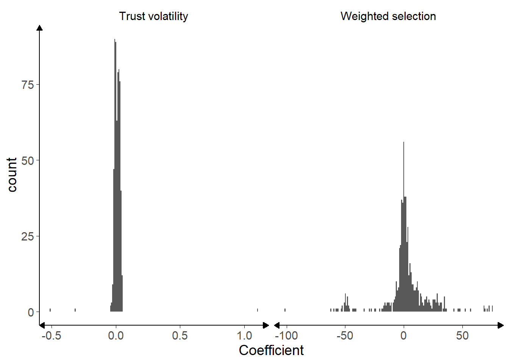
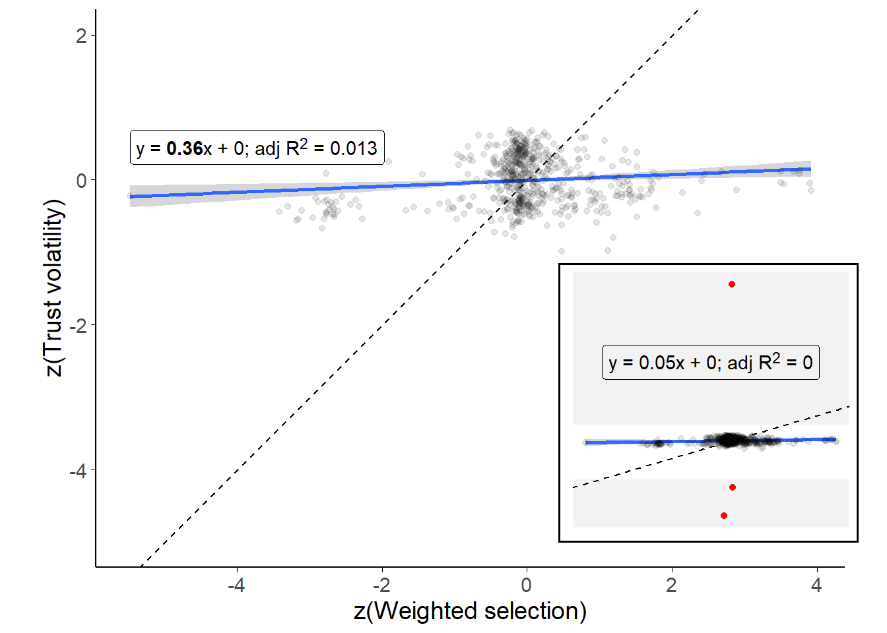
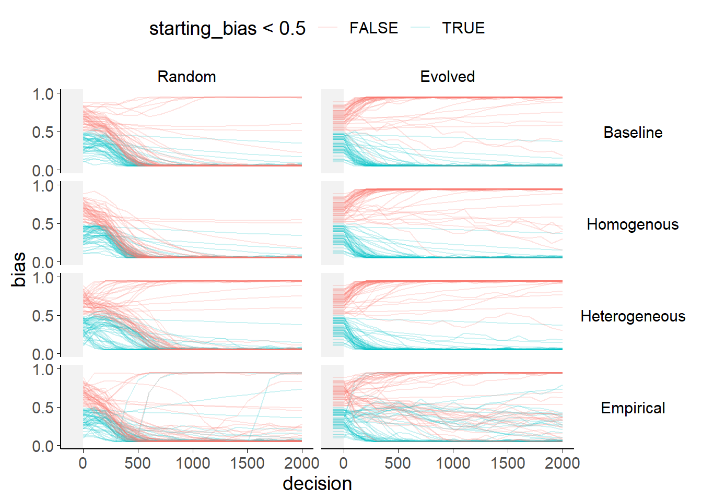
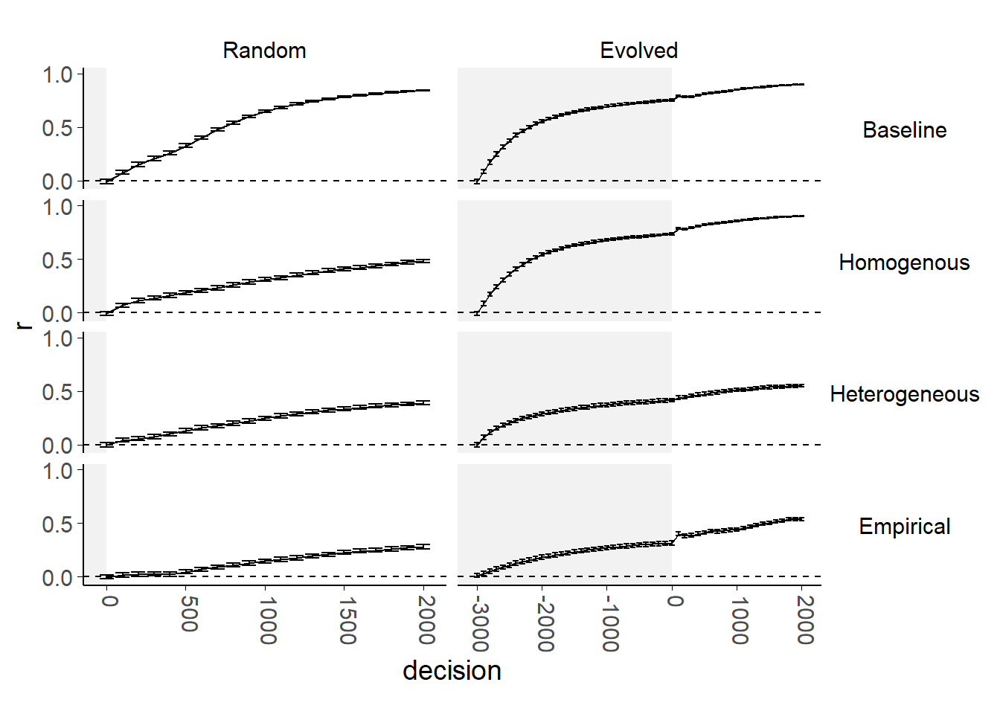
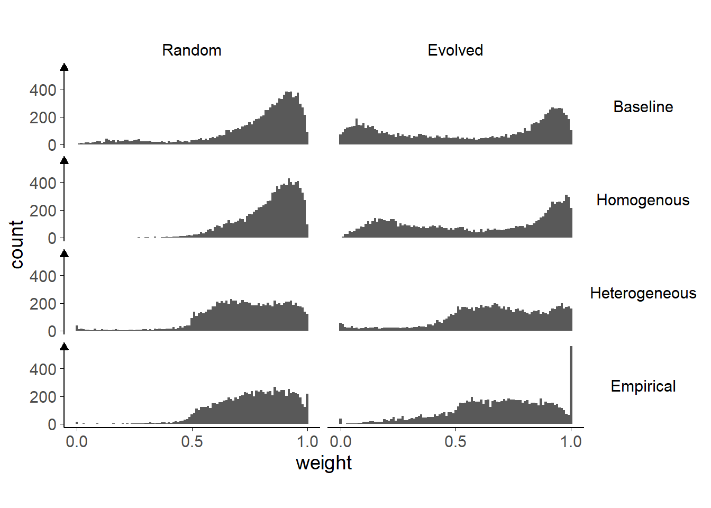

4 Network effects of advisor choice
4.1 Introduction
The behavioural experiments in the previous chapter, along with predecessors from others in our lab (Pescetelli and Yeung 2021), indicate that people show preferences for selecting advisors who agree with them and treat advice which agrees with their initial judgements as more valuable. Previous modelling work has shown that either of these properties is sufficient to produce echo chamber-like structures in networks wherein individuals increasingly disregard information from those likely to disagree with them (Pescetelli and Yeung 2021; Madsen, Bailey, and Pilditch 2018). In this chapter, similar models are constructed, with the parameters controlling the agents’ trust updating and advice seeking behaviour based on values fitted to the participants in the Dots task behavioural experiments. We aimed to explore the network effects observed by Pescetelli and Yeung (2021) and Madsen, Bailey, and Pilditch (2018) in a slightly different setup, with binary decisions that matched more closely to our behavioural tasks and, beyond this, to begin to explore the impact of individual variation. The key questions were whether the models would reproduce the echo chamber and polarisation effects seen in previous models, and how those effects would be altered by including heterogeneity within the population.
4.1.1 Agent-based models
Agent-based models are models in which numerous discrete decision-making agents interact to produce a model state, typically used to investigate emergent phenomena (Bonabeau 2002; Smith and Conrey 2007). Unlike typical models, which describe the overall behaviour of the system using equations, in an agent-based model each component agent (taken to represent an atom, a neuron, a starling, a person, etc.) has equations describing its behaviour at each time step. Crucially, the equations governing agents’ behaviour will have terms relating to other agents’ behaviour, and the outcome of the equations will produce changes in those properties. For example, a neuron might have inputs indicating whether or not a neighbouring neuron is in action potential, and the equations will determine whether or not the neuron itself triggers an action potential.
Agent-based modelling is a powerful approach, because it can connect system-level phenomena to individuals’ decision rules and incorporate individuals with outlying or different decision rules (Bonabeau 2002). The power of agent-based modelling also comes with drawbacks (Jones 2007). The intuitive nature of its explanations means that it is easy to lose touch with ecological validity (because even non-ecologically valid implementations may seem valid when expressed in agent-based terms) and easy to over-claim on the basis of results. The interactivity and emergent behaviours that it produces can mean that some models are unstable: it is important to demonstrate robustness of emergent behaviours by running repeated tests on families of models. Furthermore, the multifaceted nature of the models means that there are more features to describe; modellers must make sure that the models are precisely specified and that those specifications are shared accurately so that others are able to reproduce and explore the models (Jones 2007; Bruch and Atwell 2015).
In social science research, agent-based models are best used to investigate “the implications for social dynamics of one or more empirical observations or stylised facts” (Bruch and Atwell 2015). The models used here are employed to investigate the effects of introducing the advisor choice phenomena documented in the previous chapter into network models of social influence. Bruch and Atwell (2015) argue strongly that agent-based models would benefit from greater empirical realism, and others, including Bonabeau (2002), have called for greater ecological validity. This chapter provides some evidence for this discussion by demonstrating the effects of implementing agents which copy individual participants versus drawing agents’ coefficients from an empirically-defined distribution.
4.1.2 Similar models in the literature
The use of agent-based models has increased substantially in many fields in recent decades. Rather than attempt to present a full picture of agent-based models in which agents advise one another, this section briefly covers models that include a tendency for agents to seek out advice from like-minded others and compare the effects of varying this property. Models such as H. Song and Boomgaarden (2017) that include inter-agent influence but no variation in this propensity are not discussed.
Pescetelli and Yeung (2021) present a model which is a conceptual predecessor for the current model. In this model, agents make a single binary decision at each step on the basis of a perception of the true value and an idiosyncratic (static) bias. Agents then consult another agent for advice, and reach a final decision by integrating that advice with their initial estimate, weighted by the trust they have in their advisor. Model parameters varied according to whether or not agents received feedback, and whether or not agents sought out other agents in whom they had higher trust (similar to weighted selection in our model). They showed a cluster of interesting results, starting with the demonstration that using agreement as a proxy for accuracy in the absence of feedback is beneficial provided that individual agents’ biases are uncorrelated. Secondly, they found that agents’ trust weights aggregated into separate camps defined by shared biases where feedback was infrequent. These separate camps are analogous to echo chambers in human social networks. Lastly, they observed that agents’ biases tended to polarise in the absence of feedback when biased agents preferentially sought like-minded advice. Key differences between this model and the current model are that the current model allows for more heterogeneity in agents’ properties and draws all agents’ biases from a normal rather than uniform or point distribution. We also focus more on an exploration of low-feedback conditions rather than contrasting network behaviour under different feedback regimes.
In a similar vein, Madsen, Bailey, and Pilditch (2018) demonstrated that echo chambers could form within large networks of rational agents. Their models used agents who processed information in a Bayesian way. Crucially, those agents also had a likelihood of accepting advice that was dependent upon the similarity of the advice to their own prior beliefs. Under a range of parameters, at at a range of network sizes from 50 to 1000 agents, they showed that echo chambers formed consistently in most cases, illustrating that the agents’ selective behaviour was a robust and dominant force in shaping networks.
van Overwalle and Heylighen (2006) replicated several social psychology results using small networks of connectionist neural networks. These results included a demonstration of majority influence (the authors describe it as ‘polarisation’), in which repeated interactions bring about a consensus opinion in a small network of 11 agents. Regarding minority influence, Gao et al. (2015) reported, in a brief paper, that agents preferring to hear from like-minded others allowed stable minority opinion to persist where agents had to subscribe to one or other opinion. The persistence of these minority opinions in the face of widespread majority influence was a consequence of the self-reinforcing nature of the minority echo chamber.
Duggins (2017) offers a model of similar phenomena – social influence of opinions – using a somewhat different approach. The Duggins (2017) model uses spatial placement of agents to govern their ability to interact with others, and is based on a model of social influence driven by the difference between agents’ perspectives alone, and does not include the agents’ trust in one another as here.
These studies use agent-based models to approach questions concerning how people might decide where to get their information from. We employ the same method to the same ends, with a particular interest in how the heterogeneity seen in our behavioural experiments would alter the observed network dynamics. These studies used agents that were identical or nearly identical, and explored the consequences for the structure on the network on the basis of their position in the network. We aim to replicate these results, and extend them with an exploration of how allowing agents to exhibit the kind of heterogeneity seen in our behavioural experiment participants affects the overall patterns of changes in the network structure.
4.1.3 Aims
There are two parts to the modelling work in this chapter: exploring the characteristics of participants’ recovered model parameters; and exploring the effects of those parameters on the dynamics of the agent-based models.
In the first part, models parameters are recovered from the behavioural data for each participant using a gradient descent algorithm. The two free parameters estimated during the parameter recovery process are: how rapidly trust updates (trust volatility); and the extent to which more trusted advisors are preferred (weighted selection).
The model and parameter recovery process are both tested using simulation. The parameter recovery process is tested by attempting to recover data from simulated data (where the parameters are known), and shows a reasonable level of accuracy in recovering parameters from data, suggesting that the recovered values for participants are likely to capture some aspects of participants’ behaviour on the task. The model itself is tested by comparing errors for fitted parameters to errors for those same parameters when fitted to data that have had the advisor agreement information scrambled. Given the models are driven by the advisors’ agreement with the judge’s initial estimate, scrambling this column should break the temporal relationship between experience and trust updating, leading to worse parameter fits. This is indeed the case.
The parameter recovery results, distributions and correlations of the coefficients, illustrate the heterogeneity of the participants. Some participants’ data do not fit well to the model, indicating that these participants may have used strategies which bear little resemblance to the model the data are fit to.
We then explore the behaviour of the agent-based models (within a narrow area of their parameter space), varying the way agents’ preferences for more trusted advisors are determined. The Baseline model assigns all agents no preference for more trusted advisors, meaning that they sample from all possible advisors at random. The Homogeneous model applies the mean of the recovered parameter distribution to all agents. The Heterogeneous model draws values from a distribution defined by the mean and standard deviation of the recovered parameter distribution. The Empirical model selects values from those observed in the recovered parameter data (with replacement). For the first three models, trust update values are sampled from a distribution with the mean and standard deviation of the recovered parameters, while in the Empirical model the agents receive the trust update value for the participant whose preference strength coefficient they received. Two versions of each model are run, one which starts with a random trust network and one which starts with a homophilic trust network.
In short, we set up a comparison between the Baseline and Homogeneous model that provides a basic proof-of-concept replication of previous work described above: we expect to see polarisation of opinions and the emergence of echo chamber-like structures. Then we compare the Homogeneous model to the Heterogeneous and Empirical models, asking whether variation in agents’ advice-taking and advisor choice behaviour changes the network dynamics. We also compare the Heterogeneous and Empirical models to explore whether the use of idiosyncratic parameter sets results in further alterations to the network dynamics.
4.1.4 Current model
In the current model, the agents face a binary decision in which they integrate evidence with prior expectations in a Bayesian manner to produce an initial estimate, analogous to the perceptual decision-making task in the Dots task experiments§2.1.3.1. The agents then receive advice from another agent, whom they choose on the basis of their trust in that agent compared to all the other agents combined with their preference for receiving advice from more trusted advisors. ‘Trust’ as encapsulated in the model is double-ended: very untrustworthy advisors can give reliable information because they are firmly expected to give the wrong answer (and therefore contain information about the correct answer because the decision is a binary one). The advice is integrated with the initial estimate, again in a Bayesian manner, to produce a final decision.
The final decision is used to update the agent’s perception of the world, and in parallel also to update their trust in the advisor. The agent’s bias drifts towards the final decision answer by weighted averaging. The trust they have in their advisor increases (or decreases) depending upon whether (or not) the advice is in agreement with the final decision. This dual update, of both expectation about the world and trust in the advisor, is a key feature of the model, and reflects ubiquitous situations where relative uncertainties have to be played off against one another (Körding et al. 2007; Behrens et al. 2008).
The estimate-advice-decision-update cycle is repeated thousands of times. The models illustrate the dynamics of advice interactions: how prior expectations change over time and whether and how polarisation or consensuses emerge; and how agents’ trust in one another changes as they gain experience with one another.
4.2 Method
Agent-based modelling is used to simulate the interactive effects of repeated paired decision-making. The agents in the model perform a cycle of making an initial estimate, selecting one of the other agents as an advisor, receiving advice from the chosen advisor, making a final decision, and updating their trust in their advisor and their internal beliefs about the world. The task the agents face is roughly analogous to the task faced by human participants in the Dots task experiments§2.1.3.1, where the participants make a decision about which of two rapidly and simultaneously presented grids contained more dots.
Each model consists of a population of agents implementing the same mathematical model of decision-making, trust-updating, and advisor choice, with different coefficients for parameters of that mathematical model (Table 4.1) drawn from appropriate distributions.
4.2.1 Open code
The agent-based modelling is performed using the custom-written R package adviseR (Jaquiery 2021b).
The functions which implement each of the steps below are listed in the (non-exported) simulation loop function simulationStep.
Each of these sub-functions includes unit tests to verify its behaviour.
For readers who prefer to follow along with code rather than maths, each section below includes details of the function implementing the equations.
These small functions are not exported by the package, so links are to source code rather than package documentation.
The models take a long time to run when creating the thesis from base code. To assist with exploring the models without having to rerun models from scratch, cached data is available from Jaquiery (2021a).
4.2.2 Model details
Each model is defined by a set of model parameters (4.2), which are assigned capital letters in the equations below. These parameters are used to generate further parameters which govern agents’ tendencies, and these are assigned lower-case letters and superscripted with the agent to whom they belong. Variables which change over the course of the model have a subscript indicating which step of the model they belong to.
This is best illustrated with an example. Each agent has a sensitivity parameter, \(s^a\) which governs the amount of random noise which is attached to their perception of the world. On any given decision, the amount of this noise \(\epsilon^a_t\) is determined by drawing from a normal distribution with standard deviation defined by the agent’s sensitivity (\(N(0, \frac{1}{s^a})\)). When the agent is created, the parameter defining its sensitivity distribution (\(s^a\)) is itself drawn from a normal distribution with mean and standard deviation defined by the model settings (\(N(S^\mu, S^\sigma)\)).
4.2.2.1 Creating agents
Each agent has the properties listed in Table 4.1. An agent’s values for each of these properties are created by drawing values from normal distributions defined by parameters in the model settings (Table 4.2).
| Property | Description | Updates each step |
|---|---|---|
| \(s^a\) | Accuracy of agent’s perceptions | No |
| \(c^a\) | Agent’s subjective confidence scaling | No |
| \(\tau^a\) | Size of agent’s trust updates | No |
| \(\lambda^a\) | Size of agent’s bias updates | No |
| \(\text{w}^a\) | Extent of agent’s preference for trusted advisors | No |
| \(b^a_t\) | Agent’s prior expectation about the task answer | Yes |
Additionally, each agent has a ‘trust’ in each other agent: an estimate of that agent’s reliability ranging from being convinced that the other agent is always correct to being convinced that the other agent is always wrong. These values are updated at each step and initialised by drawing from a uniform random distribution with limits [0.5, 1].
There is an ongoing debate about whether these kinds of advice models should support expectations of lying. In some models, an agent’s lowest trust value for another agent indicates that they expect that agent’s advice will be useless (no better than random chance), while others use a floor which indicates the agent believes the advisor to be deliberately misleading (providing information in the strict sense that advice is predictive of correct answers because they reliably point to the incorrect answer). Collins et al. (2018) provide a discussion of this issue along with initial evidence that advice can be considered misleading in some cases. The current model treads a hybrid path between these positions, by initialising the trust weights such that the lowest level of starting trust is equivalent to considering the advice as random (containing no information about the truth), but allowing trust weights to decrease following interaction so that advice is considered as pointing away from the truth.
Agents are created in the make_agents function.
4.2.2.1.1 Connecting agents
Agents were joined together using a fully-connected network. It is common for models of social interactions to use connectivity graphs that reflect structural features common to social networks, including small-world (Watts and Strogatz 1998) and small-world scale-free (Humphries and Gurney 2008) networks, in which each agent is connected to several others such that the network is constructed of small clusters with a low average path length (the minimum number of steps required to connect two nodes, for all pairs of nodes in the network). Small-world scale-free networks also implement a scale-free power law structure, in which a few nodes are highly connected while most are less well connected.
The networks used here do not have these properties, and are instead fully-connected networks, wherein each agent is connected to each other agent, and the likelihood of two agents interacting is governed by their trust weights for one another. This is because we follow Pescetelli and Yeung (2021), who used fully-connected networks, and because non-fully-connected networks introduce unnecessary complexity, such as the dependency of behaviour on an agent’s position in a network (McClain 2016) and the mechanisms used for creating and breaking connections.
4.2.2.2 Model step
4.2.2.2.1 Establishing the stimulus
The same stimulus is presented to each agent, in the form of a value (\(v_t\)) drawn from a normal distribution with mean (\(V^\mu\)) and standard deviation (\(V^\sigma\)) defined in the model settings:
\[\begin{align} v_t \sim N(V^\mu, V^\sigma) \tag{4.1} \end{align}\]
The agents’ task is to determine whether \(v_t\) is greater than or less than zero.
The establishing of true values is achieved in the code within the simulationStep function, and executes a function supplied by the user.
The default function, used in all models described below, is drawing from the normal distribution.
This default can be seen in the truth_fun parameter for the runSimulation function.
4.2.2.2.2 Initial estimate-making
Agents’ perception of the stimulus is imperfect, simulated by combining the true stimulus value with random noise (\(\epsilon^a_t\)), to produce a percept \(q^a_t\).
\[\begin{align} q^a_t = v_t + \epsilon^a_t \tag{4.2} \end{align}\] Where: \(\epsilon^a_t \sim N(0, \frac{1}{s^a})\)
This sensory percept is then converted into a subjective probability that the stimulus was greater than zero (\(p^a_t\)) using a sigmoid function with a slope defined by the agent’s subjective confidence scaling parameter.
\[\begin{align} p^a_t = \varsigma(q^a_t, c^a) \tag{4.3} \end{align}\] Where: \(\varsigma(x, y) = \frac{1}{1 + e^{-xy}}\)
The conversion of the percept (\(q^a_t\)) to the subjective probability (\(p^a_t\)) changes the representation from a theoretically-unbounded normal distribution centred around 0 to a probability in the interval [0,1] centred around 0.5. The subjective probability expresses a judgement about whether or not \(v_t\) is greater than or less than zero, but does not contain an estimate of \(v_t\) itself.
In the code, the percept is calculated using getPercept.
The inclusion of the agent’s confidence scaling is done as part of the second step in the determination of the initial estimate.
This subjective probability is then integrated with the agent’s prior expectation about whether stimuli are generally less than or greater than 0 (\(b^a_t\)), or ‘bias,’ to produce an initial estimate, \(i^a_t\). This integration is performed using Bayes’ rule.
\[\begin{align} i^a_t = \frac {b^a_t \cdot P(p^a_t | v_t > 0)} {b^a_t \cdot P(p^a_t | v_t > 0) + (1 - b^a_t) \cdot P(p^a_t | v_t \leq 0)} \tag{4.4} \end{align}\]
Where: \(P(p^a_t | v_t > 0) = z(p^a_t, 1, V^\sigma)\);
and: \(P(p^a_t | v_t \leq 0) = z(p^a_t, 0, V^\sigma)\);
with: \(z(x, \mu, \sigma)\) giving the density of \(N(\mu, \sigma)\) at \(x\).
The prior, \(b^a_t\), is equal the prior probability that the value is greater than 0: \(b^a_t = P(v_t > 0)\)
In the code, the calculation of initial estimate from the percept (including the scaling of the percept according to the agent’s confidence scaling parameter) is performed in getConfidence.
Note that in these initial estimate equations the agents have direct access to a model property, \(V^\sigma\), the standard deviation of the true values of the stimuli. Ideally, in an agent-based model, the agents would not have such direct access to non-observable properties, and would instead build up specific expectations about the variability of stimuli from observation, perhaps seeded with a loosely-informative prior. The agents are allowed to know the value here as a shorthand for such exploration. This makes the agents’ task analogous to well-practised real-world tasks such as perceptual decision-making. It is unlikely to seriously affect any conclusions or illustrations drawn from the models.
The initial estimate contains both a discrete decision (whether the stimulus value was more likely to be less than zero, \(i^a_t < 0.5\), or greater than zero \(i^a_t \geq 0.5\)), and how much so (\(|i^a_t - 0.5|\)). It thus represents both the agent’s decision and the confidence in that decision.
4.2.2.2.3 Advisor choice
Having made an initial estimate, each agent selects a single advisor from whom to receive advice. This choice is made based on the trust in each potential advisor scaled by the strength of the agent’s preference for receiving more-trusted advice.
The identity of an agent’s advisor on a given trial is designated by \(a'\), and the weight assigned to advisor \(a'\) by agent \(a\) at step \(t\) by \(\omega^{a,a'}_t\). Each agent’s trust value is adjusted to be relative to the most (or least) trusted advisor, depending upon whether the agent prefers trusted (\(\text{w}^a > 0\)) or untrusted (\(\text{w}^a \leq 0\)) advisors.
\[\begin{align} \omega'~^{a,a'} = \begin{cases} \text{w}^a > 0, \omega^{a,a'}_t - \text{max}(\Omega^a_t)\\ \text{w}^a \leq 0, \omega^{a,a'}_t - \text{min}(\Omega^a_t) \end{cases} \tag{4.5} \end{align}\]
Where \(\Omega^a_t\) is the set of trust weights in all potential advisors for agent \(a\) at step \(t\).
These relative trust values are then assigned probability weightings for selection based on a sigmoid function. Because of the relative scaling, each probability is in fact drawn from a half sigmoid, where the probability weight assigned to the most likely candidate is 1 and other candidates’ probability weights between 1 and 0. The \(\text{w}^a\) parameter is a crucial one in the model; it governs the steepness of this sigmoid function (Figure 4.1). When its value is large (either negative or positive), an agent is much more consistent in their selections – smaller differences in trust values in different potential advisors translate into a much higher likelihood of selecting advisors. When its value is low, the agent’s trust in potential advisors exerts much less influence on which potential advisor is selected.
![Weighted selection parameter.<br/> Example values of weighted selection are shown. For postive values of w, as relative trust increases, the selection weight also increases. Correspondingly, for negative values of w the selection weight decreases as trust increases. Compare the intercepts with the dashed lines: all seleciton weights are 0.5 where relative trust is zero, equating to random picking between equivalently-weighted advisors. Where w is 0 (green line), relative trust differences make no difference to selection weighting. Where it is large (purple line), on the other hand, relatively small differences in relative trust translate into much greater selection weighting.<br/> The dotted line and shaded area represent the sigmoids calculated using the mean empirical value and its 95\% confidence limits.](_main_files/figure-html/nw-m-sigmoid-1.png)
Figure 4.1: Weighted selection parameter.
Example values of weighted selection are shown. For postive values of w, as relative trust increases, the selection weight also increases. Correspondingly, for negative values of w the selection weight decreases as trust increases. Compare the intercepts with the dashed lines: all seleciton weights are 0.5 where relative trust is zero, equating to random picking between equivalently-weighted advisors. Where w is 0 (green line), relative trust differences make no difference to selection weighting. Where it is large (purple line), on the other hand, relatively small differences in relative trust translate into much greater selection weighting.
The dotted line and shaded area represent the sigmoids calculated using the mean empirical value and its 95% confidence limits.
The identity of advisor \(^{a,a'}_t\) is determined by sampling at random from the advisors, weighted by the probability weights assigned.
In the R code the advisor choice procedure occurs in selectAdvisorSimple.
4.2.2.2.3.1 Differences from parameter estimation
The approach used for fitting participant data from the behavioural experiments is subtly different from that used for advisor choice in the agent-based models. In the behavioural experiments, rather than being presented with a choice of many different advisors whose appeals all had to be considered, participants were presented with a choice of two advisors only. The parameter recovery process estimated a trust update rate (\(\tau^a\) in the agent-based model) which tracked the trust in each advisor, and the difference between these trust values was fed into a sigmoid governing selection. The slope of that best-fitting sigmoid function was taken as equivalent to \(\text{w}^a\) in the agent-based models. This approach is reasonable given the differences in the advisor choice task facing the human participants and model agents, but should be noted as a caveat for drawing interpretations concerning the role of weighted selection values based on human participants’ performance.
Code for the implementation of advisor choice fitting can be found in the function advisor_pick_probability.
4.2.2.2.4 Final decision-making
Final decisions are made by Bayesian integration of the initial estimate and advice. Advice takes the form of a binary recommendation, and is weighted by the trust the agent has in their advisor.
First, initial estimates and advice are reoriented to the direction of the initial estimate, such that initial estimates represent confidence in the initial estimate and advice represents agreement with that decision:
\[\begin{align} i'~^a_t = \begin{cases} i < 0.5, 1 - i^a_t \\ i \geq 0.5, i^a_t \end{cases} \tag{4.6} \end{align}\]
\[\begin{align} i'~^{a,a'}_t = \begin{cases} i < 0.5, \text{round}(1 - i^{a,a'}_t) \\ i \geq 0.5, \text{round}(i^{a,a'}_t) \end{cases} \tag{4.7} \end{align}\]
The trust weight is slightly truncated to avoid very extreme values, and oriented based on whether the advice agrees, giving the expectedness of the advice provided the initial answer was correct: \[\begin{align} \omega'~^{a,a'}_t = \begin{cases} i'~^{a,a'}_t = 0, 1 - \text{min}(0.95, \text{max}(0.05, \omega^{a,a'}_t)) \\ i'~^{a,a'}_t = 1, \text{min}(0.95, \text{max}(0.05, \omega^{a,a'}_t)) \end{cases} \tag{4.8} \end{align}\]
The final decision is obtained by performing Bayesian integration. In Bayesian terms, agents are trying to discover the probability of their final answer being correct given the agreement (or disagreement) observed from their advisor. Thus they multiply the initial probability of being correct (subjective confidence, \(i'~^a_t\)) by the probability of the advisor agreeing if they are correct (\(w'~^{a,a'}_t\)). This is divided by all of the options that could have led to the observed advice: the probability that they are correct multiplied by the probability of the advice if they are (the numerator), plus the probability that they are incorrect multiplied by the probability of the advice if they are incorrect. Because correctness and advice agreement probability are both mutually exclusive binaries, the probability of being incorrect is 1 - the probability of being correct, and the probability of the advice if they are incorrect is 1 - the probability of the advice if they are correct:
\[\begin{align} f'~^a_t = \frac{i'~a_t \cdot \omega'~^{a,a'}_t}{i'~a_t \cdot \omega'~^{a,a'}_t + (1 - i'~a_t)(1 - \omega'~^{a,a'}_t)} \tag{4.9} \end{align}\]
The final decision (with confidence) is acquired by reversing the transformation applied earlier: \[\begin{align} f^a_t = \begin{cases} i < 0.5, 1 - f'~^a_t \\ i \geq 0.5, f'~^a_t \end{cases} \tag{4.10} \end{align}\]
Final decisions are calculated in the code in the bayes function.
4.2.2.2.5 Feedback
We are primarily interested in exploring how trust updates in situations where feedback is rare or absent, as is often the case in real-world tasks.
Correspondingly, the extent to which feedback occurs is a parameter in our model.
On a proportion of trials a proportion of the agents are randomly selected to receive feedback.
These proportions can range from 0 – no trials have feedback or no agents get feedback – to 1 – all trials have feedback or all agents get feedback.
The extent to which feedback saturates the model is the product of these parameters.
The feedback is always accurate, and implicitly trusted by all the agents.
When they receive feedback, the agents use that feedback rather than their own final decisions to update their trust and bias.
Where they do not receive feedback, agents have to rely on their own subjective estimates to determine the validity of the advice§4.2.2.2.4.
The R implementation is part of the simulationStep function.
4.2.2.2.6 Bias updating
The agents update their bias – i.e., their experience-based estimate of the relative likelihoods of the two outcomes of the binary decision – after each final decision, taking an average of their current bias and the feedback or their final decision, weighted by the agent’s bias volatility (\(\lambda^a\)). They therefore adjust their prior expectations on the basis of their experience (and advice). Participants in perceptual decision experiments can update their prior expectations in response to base rates, even when feedback is not provided (Zylberberg, Wolpert, and Shadlen 2017). Indeed, (Haddara and Rahnev 2020) suggest part of the effect of feedback is to reduce bias. Bias is specifically updated according to the following equation:
\[\begin{align} b'~^a_{t+1} = b^a \cdot (1 - \lambda^a) + f^a_t \cdot \lambda^a \tag{4.11} \end{align}\]
The bias is clamped to within 0.05 and 0.95 to keep agents at least a little open-minded:
\[\begin{align} b^a_{t+1} = \text{min}(0.95, \text{max}(0.05, b'~^a_{t+1})) \tag{4.12} \end{align}\]
This is implemented using the getUpdatedBias function.
4.2.2.2.7 Trust updating
The agents update their trust in an advisor by taking an average of their current trust in their advisor and that advisor’s agreement, weighted by their trust volatility (\(\tau^a\)). This is the second of our key parameters in the model (alongside weighted selection§4.2.2.2.3), and the way they interact is of critical importance. High values of trust volatility lead to an agent rapidly deciding an advisor is excellent or worthless, and will dramatically alter the likelihood of selecting that advisor again, depending on the agent’s weighted selection parameter. Trust update volatility is given by:
\[\begin{align} x = w^{a,a'}_t \cdot (1 - \tau^a) + i'~^{a,a'}_t \cdot \tau^a \tag{4.13} \end{align}\]
A tiny cap is used for truncation to prevent agents wholly disregarding or blindly trusting others: \[\begin{align} w^{a,a'}_{t+1} = \text{min}(0.9999, \text{max}(0.0001, x)) \tag{4.14} \end{align}\]
Trust updates are accomplished using the newWeightsByDrift function.
In the current model, trust weights for an advisor do not change unless advice is received from that advisor. This is not the only approach; alternatives include decay of trust in unselected advisors towards a default value and normalisation of trust weights such that the sum of an agent’s trust weights for all their advisors remains constant. Whether or not trust decays over time and whether or not increased trust in one advisor diminishes trust in other advisors are empirical questions (and may change based on context), but we do not expect the results of the model would be substantially different if trust weights for unselected advisors were updated in these ways.
4.2.3 Model parameters
Beyond the critical parameters of interest – weighted selection and trust volatility – the models have a large number of parameters. These can be broadly divided into parameters which govern the distributions from which the agents’ parameters are drawn, and parameters which define the operation of the model.
| Property | Description | Type |
|---|---|---|
| Number of agents to simulate | model | |
| Number of decisions to simulate | model | |
| Binary flags indicating whether trust and/or bias update at each step | model | |
| Probability feedback is provided each step | model | |
| Proportion of the population receiving feedback when provided | model | |
| Seed used for the pseudorandom number generator to allow repetition of runs | model | |
| Standard deviation for true world values | model | |
| Whether agents use their own confidence to modify their trust updates | model | |
| \(B^\mu, B^\sigma\) | Mean, standard deviation of distribution of agents’ biases | agents |
| \(S^\mu, S^\sigma\) | Mean, standard deviation of distribution of agents’ sensitivities | agents |
| \(T^\mu, T^\sigma\) | Mean, standard deviation of distribution of agents’ trust volatilities | agents |
| \(\Lambda ^\mu, \Lambda ^\sigma\) | Mean, standard deviation of distribution of agents’ bias volatilities | agents |
| \(C^\mu, C^\sigma\) | Mean, standard deviation of distribution of agents’ confidence scaling | agents |
| \(W^\mu, W^\sigma\) | Mean, standard deviation of distribution of agents’ trusted advisor preference | agents |
These parameters can be seen in full by inspecting the parameters for the runSimulation function.
4.2.3.1 Parameters varied between model runs
There are three parameters which are varied between runs:
-
decision_flags, whether or not there is time for the random network weights to update before agents’ biases begin to update - \(W^\mu, W^\sigma\), the agents’ weighted selection values
The exact specification of how these parameters are varied can be seen in the source code for this document.
4.2.3.2 Constant parameters
Many parameters are held constant across runs. Within reasonable tolerances, these parameters do not have substantial effects upon the model dynamics. A detailed exploration of the model space is beyond the scope of this work, but all parameters were varied in some way during model development. The main parameters which could in principle vary but which are held constant are:
-
feedback_probabilityandfeedback_proportion, which force the agents’ biases to remain closer to the optimal value of 0.5. The bias reduction effect is as expected from Haddara and Rahnev (2020). - \(B^\mu\), which increases polarisation and homophily by separating the mean of the agent groups
- \(B^\sigma\), which has little effect independent of \(B^\mu\), but can increase the frequency of extreme and moderate biases
-
\(S^\mu\) and \(S^\sigma\), which interact with
truth_sdand \(C^\mu\), \(C^\sigma\) to determine agreement rates given a constant bias, increasing or decreasing the power of weighted selection to shape network dynamics - \(\Lambda ^\mu\) and \(\Lambda ^\sigma\), which increase the speed of the network dynamics (so that similar trajectories occur over fewer generations)
- and
confidence_weighted, which decreases the speed of the network dynamics.
It is plausible that there are interactions between these and other model parameters that were not detected during model development. The model code is made available to allow others who may be curious about aspects of the model beyond the scope of this thesis to investigate behaviour in these regions of the parameter space. Formal runs illustrating the effects described above are not provided here because they would require a huge amount of computational time to generate for the full models described in this chapter.
4.2.3.3 Empirically estimated coefficients
The models which have their weighted_sampling value marked as ‘emp’ are constructed by drawing parameter values for trust volatility (\(\tau^a\)) and weighted selection (\(\text{w}^a\)) directly from the parameter coefficients estimated from the empirical Dots task data. The weighted selection values in other models are taken from distributions defined by the estimated values for the population, which allows for the generation of an unlimited number of unique participants but means that the agents produced will be more homogeneous in their overall strategies. For example, if a minority strategy exists within the population, the parameter estimate distributions reflective of the dominant strategy would be slightly modified through averaging towards the minority strategy, which may in turn produce agents whose behaviour is not reflective of any plausible real individuals.
Using parameters estimated from actual individuals instead of drawing from a distribution derived form those values has both strengths and weaknesses. The strengths are that the values represent genuine best-estimates of both trust volatility and weighted selection of real participants who completed one of our Dots task behavioural experiments. Given that these two parameters are related to one another, with weighted selection being dependent on trust volatility, it may be important to use observations of both simultaneously to appropriately model individuals’ behaviour. The weaknesses are that the task given to human participants differed in potentially important ways from the task modelled in the agent-based model. The most potentially important difference in this respect is the choice of advisor: in the behavioural experiments the human participants were familiarised with two advisors and then given the choice between them, whereas in the model the agents are picking from a large number of potential advisors. The parameter is estimated on the basis of a sigmoid function applied to the trust difference between advisors, whereas it is used in the agent-based models in a half-sigmoid applied to the difference between each advisor and the most trusted advisor.
These considerations mean that the model dynamics arising from using estimated coefficients may be informative, but only in an illustrative capacity. Too much differs between the behavioural and simulated situations to draw strong conclusions.
4.2.3.3.1 Behavioural data source
The behavioural data were taken from participants who completed one of the Dots tasks experiments. This included participants in experiments that were unsuitable for analysis because of bugs in the experiment implementation. Participants in experiments that did not offer a choice of advisor were not included, because it is not possible to estimate the weighted selection parameter \(\text{w}^a\) for participants who never make choices between advisors. Ultimately, this meant that data were drawn from 593 participants over 12 different experiments. Only trials that had advice were included, whether the advice came from a chosen advisor or an assigned advisor. Overall, there were 170590 trials in the data, of which 56940 trials (33.38%) had a choice of advisor.
The Dots task data were used for this because the Dots task presents a more consistent experience between participants. Whereas in the Dates task some participants perform far better than others, in the Dots task overall performance is clamped to around 71% using a staircase procedure. Another advantage to the Dots task data is that there are many more trials, meaning that the recovered parameters are much more precise.
4.2.3.4 Model results analysis
The model behaviours of interest are polarisation – the extent to which the agents’ biases tend towards extreme values – and echo chamber formation – the extent to which agents form separate trust bubbles wherein they have high trust towards others inside the bubble but low trust towards those outside. The true probability of the binary answer being greater than 0.5 is 0.5; i.e. either answer is equally likely.
Polarisation is operationalised as the mean absolute deviation of agents’ biases from 0.5. Echo chamber formation is quantified in two ways: shared bias-weight correlation and group ratio. Shared bias-weight correlation is the correlation between the amount of shared bias agents have (1 - the absolute difference between their biases) and the trust weight of one agent for the other. This is calculated for each directional tie in the network, meaning that each shared bias is accompanied by two trust weights. The overall correlation between these values gives the extent to which agents’ trust in other agents is associated with their shared expectation about the result. Group ratio is calculated by splitting the population of agents into two groups based on whether or not their bias is above 0.5. The mean of the trust weights for agents within their group is then divided by the mean of the trust weights for agents outside their group. The higher this ratio, the more extreme agents’ tendencies to trust those with similar biases compared to those with different biases.
4.3 Results
4.3.1 Model checks
Verification of this model fitting approach was conducted on the Advanced Research Cluster (Richards 2015) in three ways.
Firstly, simulated participant datasets were generated by using the recovery model. This was achieved by running the recovery model in reverse with known coefficients for \(\text{w}^a\) and \(\lambda^a\) parameters. This produced simulated data generated from known coefficients. The recovery model was then run on these simulated data, and the recovered estimates for the \(\text{w}^a\) and \(\lambda^a\) parameters were compared with the known coefficients used to generate the data. This illustrated that known coefficients could be recovered.
Secondly, error scores were compared for coefficients fitted to each participants’ advice-taking and advisor choice data and coefficients fitted to versions of that participant’s data where the advisor agreement column values had been shuffled. Overwhelmingly, the fitting error on the shuffled data tended to be higher than the fit to the original data, indicating that the models were sensitive to participant patterns related to advisor agreement (Figure 4.2).
Finally, the error for coefficients fitted to the participants’ data were compared to errors for the same coefficients fitted to shuffled data. Error values for the shuffled data tended to be higher than values for the original data, suggesting that participants’ behaviour shared some features with the model’s expectations.
![Real versus shuffled data fitting error.<br/> Each participant's data were shuffled such that the advisor agreement value for each trial was no longer systematically tied to the trial on which it actually occurred. This process was repeated 9 times, and then joined to the real data. A joint error score was created by summing standardized scores for trust volatility error and weighted selection error. The plot shows the distribution of position of the real data within the combined dataset, with lower numbers indicating lower combined error. For many participants, especially those encountering advisors with particularly high or low agreement rates, this shuffling effect may be quite small, meaning that the difference between shuffled and unshuffled data is less pronounced and that therefore the chance of a better fit to shuffled data is higher.](_main_files/figure-html/nw-r-shuffle-positions-1.png)
Figure 4.2: Real versus shuffled data fitting error.
Each participant’s data were shuffled such that the advisor agreement value for each trial was no longer systematically tied to the trial on which it actually occurred. This process was repeated 9 times, and then joined to the real data. A joint error score was created by summing standardized scores for trust volatility error and weighted selection error. The plot shows the distribution of position of the real data within the combined dataset, with lower numbers indicating lower combined error. For many participants, especially those encountering advisors with particularly high or low agreement rates, this shuffling effect may be quite small, meaning that the difference between shuffled and unshuffled data is less pronounced and that therefore the chance of a better fit to shuffled data is higher.
4.3.2 Participants’ coefficients

Figure 4.3: Histograms of recovered parameters.

Figure 4.4: Correlation of recovered parameters.
Outliers with extreme trust volatility values (|z| > 5) have been dropped, and are shown on the inset plot for context. Each point is a participant, and the solid blue line shows the overall relationship (with 95% confidence intervals shaded in grey). The formula for the line is given in the top-left. Dashed line indicates a 1:1 correlation.
The model specified above§4.2.2.2 was fit to each participant’s data using a gradient descent algorithm. The model was run with random values for \(\text{w}^a\) and \(\lambda^a\), and its fitness measured. The fitness function for this algorithm assessed the combined error of the model in predicting the participant’s advisor choice and advice-taking behavioural data. The algorithm then updated the \(\text{w}^a\) and \(\lambda^a\) parameters individually and reran the model. If the model run with the new parameter had better fitness, that new value was kept for that parameter. The algorithm then began again, and halted when it detected that no more progress with increasing fitness was being made. The model assumed that at the first encounter the advisors were equally trusted.
The resulting coefficients were clustered close to zero for most participants, with a roughly Gaussian distribution, as shown in Figure 4.3. The values are generally greater than zero for both \(\text{w}^a\) (t(592) = 2.82, p = .005, d = 0.12, BFH1:H0 = 2.35; MWeightedSelection = 2.18 [0.66, 3.71], \(\mu\) = 0) and \(\lambda^a\) (t(592) = 5.10, p < .001, d = 0.21, BFH1:H0 = 1.4e4; MTrustVolatility = 0.01 [0.01, 0.02], \(\mu\) = 0). This makes sense because it indicates that participants tended to trust advisors more to the extent that their advice agreed with participants’ own initial judgements (\(\lambda^a\)), and that people tended to choose advisors they trusted more over less trusted advisors (\(\text{w}^a\)). Nevertheless there was considerable variability in these estimates. There was no significant correlation between trust volatility and weighted selection (Figure 4.4).
4.3.2.1 Stability of coefficients
Several participants performed experiments that had two core sections. In each of these sections, participants were familiarised with and then allowed to choose between pairs of advisors who had the same advice profiles but different identities. For example, a participant in a High versus Low advisor accuracy experiment might see two pairs of advisors, with each pair having one High accuracy and one Low accuracy advisor, and all the advisors having different names and visual presentations. This repetition meant that we could perform parameter recovery on the data for each participant separately for each of the repetitions. If the coefficients estimated for each of these repetitions were more similar within a participant than between participants in the same experiment, then that would provide evidence that the parameters we recover are stable properties of a participant.
We performed this analysis and ran a t-test to compare the absolute differences between a participant’s first and second estimate versus the absolute differences between a participant’s first estimate and the second estimate of another participant in that experiment. The results provided strong evidence that the differences were indistinguishable, indicating that either the coefficients recovered did not represent a stable property of a participant, or that we were not able to estimate them precisely enough to demonstrate this (Trust volatility: t(434) = -0.29, p = .774, d = 0.01, BFH1:H0 = 1/17.8; MDifference|real = 0.04 [0.02, 0.05], MDifference|shuffled = 0.04 [0.02, 0.05]; Weighted selection: t(434) = -1.77, p = .077, d = 0.08, BFH1:H0 = 1/3.93; MDifference|real = 18.73 [16.28, 21.19], MDifference|shuffled = 20.76 [18.38, 23.14]). The variation within agents is not implemented in our model; our interest is in heterogeneity between agents. Nevertheless, this result suggests that heterogeneity within agents may be an important feature to model in future work.
4.3.3 Validity of the model

Figure 4.5: Bias evolution within each model.
Each plot shows a model run with a different combination of starting trust weights and weighted selection values. Each line shows the bias of a single agent, coloured according to whether the agent’s starting bias was more or less than 0.5. In the Evolved weights graphs the evolution period prior to biases being allowed to shift is truncated (and marked with grey shading).

Figure 4.6: Shared bias-weight correlation evolution for each model.
Each plot shows a model run with a different combination of starting trust weights and weighted selection values. Each graph shows the mean correlation between shared weight between agents and trust weights at each decision.

Figure 4.7: Distribution of final weights for each model.
Each plot shows a model run with a different combination of starting trust weights and weighted selection values.
![Model final decision group ratio and mean final bias magnitude.<br/> Each of the trust weights and weighted selection sampling combinations in the figures above was run multiple times with different random seeds. Each of these runs is represented by a single line. Some models have no group ratio because there is only one group at the final decision (because there is a consensus wherein all agents have the same direction of bias), which means that the ratio of weights is undefined and consequently the line is broken. Group ratio is not bounded to the vertical axis values shown.](_main_files/figure-html/nw-r-all-models-summary-1.png)
Figure 4.8: Model final decision group ratio and mean final bias magnitude.
Each of the trust weights and weighted selection sampling combinations in the figures above was run multiple times with different random seeds. Each of these runs is represented by a single line. Some models have no group ratio because there is only one group at the final decision (because there is a consensus wherein all agents have the same direction of bias), which means that the ratio of weights is undefined and consequently the line is broken. Group ratio is not bounded to the vertical axis values shown.
A first set of simulations aimed to evaluate basic network behaviours in terms of trust formation. We ran 40 simulations comprising 144000 interactions among agents as defined above. Of interest was the evolution of agents’ trust and beliefs (biases) over time, in particular as a function of their starting bias. Agents were initially defined as belonging to one of two populations with differing (mirrored) biases in their prior expectations about the decisions. Figure 4.5 shows the evolution of agents’ beliefs in a single simulation run. The left-hand panels show simulations where agents’ trust weights are randomised, while the right-hand panels show simulations where the agents’ trust weights are allowed to evolve on the basis of advice exchanges for 3000 interactions prior to biases updating. The simulations are differentiated by the manner in which the agents’ key parameters, \(\text{w}^a\) and \(\lambda^a\) are determined. In the Baseline simulation the value of \(\text{w}^a\) is zero, while \(\lambda^a\) is drawn from the empirically observed distribution. In the Homogeneous and Heterogeneous simulations, \(\lambda^a\) is again taken from the empirically observed distribution and \(\text{w}^a\) is set to the mean of the empirically observed distribution (Homogeneous) or drawn from that distribution (Heterogeneous). In the Empirical simulations, each agent selects a participant at random from the empirical data and uses that participant’s estimated values of \(\text{w}^a\) and \(\lambda^a\).
The model reproduces key effects of interest. The key patterns of interest are visible even in the Baseline simulations, where agents update trust depending on agreement but do not preferentially select their advisors based on that trust. Firstly, agents reinforce one another’s biases, leading to the emergence of extreme biases and echoing the effects in the literature. This can be seen in Figure 4.5 (top row) where the biases of all but a handful of agents reach and remain at extreme values. Whether or not the entire population tends collapse into a single bubble, adopting the same extreme value, or to polarise into two distinct bubbles depends upon whether or not the trust network is already network-chamber-like (left versus right columns). Secondly, agents develop greater trust in agents who share their bias, as shown by Pescetelli and Yeung (2021). This can be seen in Figure 4.6 (top) where the correlations between agents’ shared bias with an advisor and their trust in that advisor rises over time. Agents who have more similar biases to one another ought to arrive at the same conclusion as one another more frequently, meaning that they will agree more frequently. This, in turn, leads to greater trust over the course of repeated interactions, producing the correlation in Figure 4.6 that offers a rough measure of the extent to which agents’ trust in one another is dictated by the similarity in their biases. Below, we explore how these features vary as a function of our different sampling strategies for \(\text{w}^a\) and \(\lambda^a\).
4.3.3.1 Random versus evolved trust networks
The model shows a substantial effect of whether or not the agents’ trust weights have a chance to evolve prior to biases being allowed to shift. The models in Pescetelli and Yeung (2021) implemented this approach, and, like the current model, demonstrated group polarisation where agents selectively sampled from their own groups and thereby increased their bias.
Where the models are started with random trust weights, agents also tend towards extremes, but there is a single consensus for all agents in the model. When this happens, the population is no more accurate than in other models, but is more unified. This happens because of differences in the initial correlation between agents’ biases and levels of trust. In the random case, the network starting state has no correlation between agents’ biases and levels of trust (Figure 4.6, left). As a consequence, early on, agents are equally strongly influenced by others with different biases as they are by others with similar biases. In the case with Evolved trust there is an initial correlation between agents’ biases and their levels of trust (figure 4.6, right, unshaded area), meaning that the network begins with correlated biases and trust. This results in segregation into two stable, self-reinforcing sub-networks. This is further reinforced by agents’ acquiring negative trust in agents with dissimilar biases (Figure 4.7, top-right). Trust values between 0 and 0.5 indicate that agents believe other agents are predictive of the truth, but that their advice points away from the truth. This means that interaction with others serves to strengthen rather than weaken biases.
Figure 4.8 shows an overview of this pattern for multiple runs with different random seeds: the evolved trust weight runs tend to show higher group ratios, indicating greater polarisation.
4.3.3.2 Effect of weighted selection
Figure 4.5 (second row) plots the evolution of biases when we add weighted selection of advisors to the simulations. Specifically, in this Homogeneous case, all agents used the mean value of \(\text{w}^a\) that we observed in the parameters estimated from our participants’ data. The agents used this value to weight their selection of advisors. The figure shows that this form of weighted selection has very modest effects of network dynamics. This is likely because the mean value estimated from the Dots task participants was small. There is virtually no effect on bias trajectories, and only a slight one on the distribution of trust weights (Figure 4.7), with fewer very low weights in the weighted selection runs. The most notable effect was in the correlation between shared bias and trust weight where trust weights are random. In this case, the correlation between shared bias and trust weight does not increase as fast or get as high when weighted selection is introduced. The group ratio is nearly always lower when weighted selection is introduced.
These effects are due to agents becoming increasingly unlikely to sample advice from advisors as the trust in those advisors decreases, which in turn means that only the higher trust weights are likely to be adjusted. In effect, when weighted selection occurs the lower tail is ignored, meaning that trust remains unchanged whether the shared bias is moderate or low, and thus reducing the correlation between them. In this sense, the effects of weighted selection itself are more a feature of the operationalisation than the underlying model. The models offer agents a choice of advisors at each step, and leave the trust weights of unsampled advisors static. Other plausible modelling choices might not show this pattern, for example if agents’ trust in unsampled advisors gradually decayed to a neutral value; or if the overall level of trust in potential advisors were normalised such that an increase (or decrease) in trust in one agent meant that trust in all other agents underwent a slight decrease (or increase), perhaps proportional to their current trust values.
4.3.3.3 Heterogeneity
Allowing heterogeneity in weighted selection coefficients has a more pronounced effect. Whether the heterogeneity comes from sampling from the distribution of estimated participant coefficients (Heterogeneous) or sampling directly from the empirically-estimated values themselves (Empirical), varied weighted selection values create subsets of agents who polarise away from the consensus value formed when starting trust weights are random. In Figure 4.5 this is visible in the left-hand column: in the bottom two panels there is a small cluster of lines that trend towards 1 rather than 0, and that remain there throughout the simulation. Additionally, there is more heterogeneity in the agents’ biases, with several agents retaining moderate biases (lines that do to tend to extremes in Figure 4.5).
There are differences, too, between the Heterogeneous and Empirical sampling approaches. Compared to the Heterogeneous sampling, the model with Empirical sampling shows more moderate biases and more extreme weights (Figure 4.8). This apparently contradictory finding is explicable because agents in the Empirical runs include both positive and negative weighted selection coefficients. This leads to the peaks of weights at both the 0 and 1 end of the histogram for evolved weights. The negative weighted selection values can also drive agents to sample advice that is likely to disagree with them, moderating their biases as seen by a larger minority of agents with moderate biases in the Empirical run than in other runs. Madsen, Bailey, and Pilditch (2018) termed agents with this advice-seeking strategy ‘Socratic’ because they aimed to engage with others of a different opinion. This sampling approach may be behind the fact that many more agents switch the direction of their bias in the Empirical simulations than in the other simulations.
Finally, Figure 4.7 illustrates that a substantial minority of weights reach the maximum value in the Empirical simulations. This suggests that many agents adopt a favourite advisor and stick with that advisor because they tend to agree more often than not, meaning they retain their relative advantage over other advisors. This likely happens more in the Empirical simulations because more of the agents have extreme values of \(\text{w}^a\).
4.3.4 Friends in strange places
Combining the results above, the models raise the interesting observation that consensuses form much more readily where issues arise on which people are likely to encounter different opinions within their circle of trusted informants. This can be seen in Figure 4.5: in the Random case, where agents are likely to have trusted potential advisors who have very different biases, the population tends to drift together towards a single majority consensus. It is important to note that, at least in these models, the extreme that is selected by consensus is not more accurate than the extreme that is neglected by the consensus (and is less accurate than the starting positions), but it is nevertheless intriguing to see dynamics that resemble broad versus insular consultation.
Heterogeneous weighted selection can prevent a full consensus forming where individuals have access to trusted advisors of a variety of different opinions. This was evident in the Random starting trust weights simulations in Figure 4.5: minority groups emerge and reinforce their own biases to adopt the opposite extreme to the consensus favoured by the majority; and several agents continue to occupy the middle-ground long after the majority and minority groups have adopted their extreme positions. This pattern in the Heterogeneous and Empirical simulations emerges because those who have a strong preference for agreement rapidly disregard the advice of their previously-trusted advisors who offer a different opinion. These agents form their own polarised minority, consulting and advising one another consistent with their bias (as the majority are also doing, just with the other bias). This pattern differed from the Baseline and Homogeneous simulations, illustrating the impact of inter-individual variability on network level behaviour.
4.3.5 Consistency of the models
Each model was run 5 times with different random seeds to check which features were consistent across runs, indicating the level of stochastic uncertainty (Bruch and Atwell 2015). The features described above were all consistent across runs, as can be seen by observing the variability in Figure 4.8 in both of the outcome variables§4.2.3.4.
For parameter sets in which all agents’ biases tend towards the same extreme, which extreme was favoured varied according to the random seed used. This stochastic is akin to placing a ball on a gabled roof: tiny variations in the initial conditions affect which way it will roll, but it will always roll down one pitch or the other.
Similarly, in some of these models, adding in weighted selection switches which bias extreme is adopted. This effect is not consistent between runs with different random seeds, and is an outsized effect of minor differences to early states, analogous to a breath of wind nudging the ball in the previous example one way or another.
Output in the style of Figures 4.5, 4.6, and 4.7 for different random seeds can be visualised by tweaking the source code for this chapter.
4.3.6 Summary
The results shown in Figure 4.8 capture the key observations of this work. Weighted selection (\(\text{w}^a \neq 0\)) is not necessary for the formation of echo chambers. Indeed, perhaps counter-intuitively, we found some tendency that weighted selection can reduce these effects, because unsampled potential advisors are not learnt about (and therefore are not distrusted over other unsampled potential advisors). Heterogeneity complicates and enriches this picture in interesting ways, supporting the various minority strategies visible in Figure 4.5.
4.4 Discussion
As with previous simulation-based approaches§4.1.2, this work showed that echo chambers and polarisation can occur in networks of agents using heuristics that appear from the agent’s perspective to be rational. In the absence of an objective source of information, using your own opinion as a proxy for the truth is a viable strategy under a range of broadly-true assumptions (Pescetelli and Yeung 2021). Likewise, choosing to hear advice from more trusted sources, and choosing to hear advice you are more likely to take (often the same thing in our models and in real life), is a reasonable strategy. The emergence of collective irrationality from the interaction of rational individuals is similar to the well-known phenomenon of the Tragedy of the Commons (“Tragedy of the Commons” 2021), in which individual rewards purchased with distributed costs results in everyone becoming poorer.
4.4.1 Weighted selection
The models indicate that weighted selection (\(\text{w}^a\)), the extent to which agents prefer to receive advice from those whom they consider most trustworthy, has relatively little effect on model dynamics, at least at the level estimated from participant behaviour. The results from more heterogeneous runs discussed below indicate that agents with high weighted selection values do behave in notably different ways. During development we observed that higher weighted selection values (above 10) tended to accelerate the polarisation of the model.
We must note, however, that the weighted selection parameter is used somewhat differently in the model than its analogue was in the behavioural experiments from which it was derived. In those experiments, participants were familiarised with two advisors and then offered the choice between them. In our model, there are numerous potential advisors available and the weighted selection parameter weights the relative probability that each of those advisors is selected. This means that the parameter values derived from our empirical observations may not correspond closely to the values we would have obtained had the behavioural task been a closer match to the simulated one. While our models illustrate that variation in weighted selection plays a part, therefore, we do not make strong claims that the specific values used are meaningful, even in the Empirical case.
4.4.2 Heterogeneity
Most work using agent-based models, in particular the work on the topic of advice-taking (Pescetelli and Yeung 2021; Madsen, Bailey, and Pilditch 2018), has used agents whose key properties either do nor vary or vary in a predictable way (e.g. sampling from a standard distribution). Here, we explored the effect of sampling agents’ properties directly from a collection of values estimated from participants in our behavioural experiments. This variation potentially allows us to see the effects of minority strategies that may be hidden where extreme values, or particular combinations of values, are smoothed away by the use of a mean or normal distribution to describe the entire population.
Beyond the basic effects of including weighted selection, some models used weighted selection coefficients that were heterogeneous across agents. In both the Heterogeneous and Empirical models, heterogeneous weighted selection coefficients led to the emergence of hold-out groups – small subsets of the population who formed their own minority consensus at the opposite extreme to the majority consensus.
Where the models had evolved trust networks prior to beginning their bias updates, polarisation was common, and heterogeneous weighted selection coefficients sped up this process. They also appeared to make it harder for agents to maintain low biases, although many of the agents in the Empirical model managed to maintain these moderate biases for the duration.
These effects, the presence of hold-out groups and the speeding up of polarisation, suggest that other models of advice dynamics may underestimate the speed with which polarisation occurs while overestimating the degree to which it takes over.
The hold-out groups captured in the heterogeneity models is an observable feature of opinion networks in the real world. For each consensus opinion there is likely to be an outspoken minority who cling resolutely to the opposite opinion. The models presented here cannot tell us how such heterogeneity comes about, but they do underscore its importance in the wider ecosystem of opinion interactions, and invite questions concerning its origins. One suggestion we raise here is that being contrarian may be a stable sub-strategy within an environment where consensus dominates.
We acknowledge that the specific values of parameters estimated here may not be a good description of people’s tendencies in the kind of task simulated: because of differences between the binary advisor choice situation faced by the participants and the multiple advisor choice situation faced by the agents; or because of difficulties in accurately estimating the coefficients for some participants; or because the the participant population may deviate somewhat from humanity in general. Despite this, we are confident that individual variation in these advice-taking and source-selection propensities exists, and that it matters in interesting ways for network dynamics. Idiosyncrasies certainly occur in confidence ratings (Ais et al. 2016; Navajas et al. 2017), and likely in advice-seeking and advice-taking behaviour, too (Soll and Mannes 2011; Pescetelli, Hauperich, and Yeung 2021). Additionally, there may be variation in confidence across personality and psychiatric dimensions, and computational models are increasingly used to explore the implications of these kind of variations in psychiatric disorders (Ais et al. 2016; Navajas et al. 2017; Rouault et al. 2018; Moses-Payne et al. 2019; Hauser et al. 2017).
There are numerous potential causes for inter-individual variation in advice-taking and advisor choice behaviour. In behavioural experiments in our lab, we often see a small minority of participants will take no advice at all – never seeking it or changing their answer if they receive it – and these participants typically report very high subjective confidence. It is plausible, therefore, that whatever causes the heterogeneity seen here, it has some relationship to confidence. Advice-seeking has been argued to serve several purposes, including increasing accuracy (Soll and Larrick 2009), diffusing responsibility (Rader, Larrick, and Soll 2017), and social inclusion (Mahmoodi et al. 2015). Correspondingly, individual variation in the importance of any of these components may alter the tendency to seek and use advice.
4.4.3 Considerations
There are several considerations which should be borne in mind while interpreting the results of the models. These considerations fall into several different categories, from technical constraints to limitations on generalisability.
4.4.3.1 Stability of coefficients
We were unable to demonstrate that independent estimates of participants’ coefficients were more similar than would be expected by chance. This means that we are unable to rule out the suggestion that there is as much variation in advice-taking and -seeking behaviour within people as between them. In our models, agents have set individual propensities governing how they take and use advice. The literature suggests that people have idiosyncrasies governing confidence and its relationship with advice-seeking (Ais et al. 2016; Navajas et al. 2017; Pescetelli, Hauperich, and Yeung 2021), but it is nevertheless plausible that these idiosyncrasies vary dramatically across time and context. Further simulation work might investigate the effects of heterogeneity within rather than between agents.
4.4.3.2 Context
Polarisation and homophily are not inherently bad features. In some discussions (e.g. debates about whether slave ownership is morally permissible) we can be glad that near-universal opinion reigns on the issue, despite its once being a contested issue. In others (e.g. discussion concerning the extent to which the state should be involved in individuals’ lives) it is helpful to have a range of opinion to maintain the diversity of approaches (Diamond 1998, p482).
This means that the context must be considered when evaluating the implications of these models. The mathematics and computational results will remain the same, but the real-life implications would change dramatically depending upon the context which the models were chosen to represent15. The model presented here could be considered a model of many different kinds of social interactions, from those where consensus is desirable, such as norm formation, to those where consensus is subordinate to accuracy, such as group and individual decision-making. The implications of polarisation and consensus formation appear beneficial in some cases and harmful in others. The model is sufficiently specified that it is unlikely to fit many interpretations outside of the domain of social influence, but there are plausibly areas in other disciplines which may have a different gloss on this or a very similar model implementing a combination of Bayesian and weighted average integrations and updates.
4.4.3.3 Generalisabilty
There are two major question marks concerning the generalisability of the model results. The first is to do with the assumptions of the model, specifically whether the recovered parameters are features of individuals that remain stable across contexts; and the second to do with the results, specifically whether people polarise to the extent indicated by the model.
The first of these generalisability concerns is part of what Bruch and Atwell (2015) term ‘input uncertainty.’ This is uncertainty over the inputs of a model – in the present case the coefficients recovered from participant data. For each of our participants, we fitted our underlying mathematical model to their behavioural data so that we obtained coefficients that minimised the fitting error across both parameters simultaneously. The existence of such minima, though not unique for every participant, is an observed fact. What is less clear, however, is whether these coefficients represent a stable and enduring feature of the participants or whether they are largely arbitrary – an ephemeral product of time, psychological context, and task. It is a basic assertion of the model that the coefficients observed for an individual do not change during the model: the size of the trust update is the same at decision 1000 as it is at decision 1, and likewise the strength of preference for hearing from an advisor who is more likely to agree. The results of the model can inform us about what might happen if these properties are stable, although even then it is unlikely that the values themselves are exactly accurate to some posited underlying propensity. The constant model parameters were tuned during development to give sensible results given the mean value of weighted selection and the mean and standard deviations of trust volatility, so the performance of the model should not be taken as strong evidence for the existence of the posited psychological features.
The second generalisability concern is in the conflict between the model behaviour and the results of research into the level of polarisation and consensus in society. Research demonstrates that most people occupy central positions on political issues, and that while political polarisation varies across operationalisations and across time, it is not becoming increasingly pronounced in recent years (B. Park 2018; Perrett 2021).16 The interpretation of the simulations in terms of real-world politics is dependent on what we think models are showing. We may consider them as showing the drift leftwards of political opinion over time on moral issues (B. Park 2018), i.e. as models of consensus formation. Alternatively, we may view them as suggesting that moderate areas are uninhabitable, which is clearly not the case on most issues. The model does allow for the emergence of a middle-ground (accurate) consensus where feedback rates are higher, however, although what constitutes feedback in real-world political scenarios is debatable; we pursue this work in part because we regard real-world decisions as frequently lacking in timely actionable feedback. The precise nature of political polarisation, whether and to what extent it occurs and what modifies it, is an open question and the subject of an entire literature in its own right.
4.4.3.4 Known psychological aspects which are left out
The modelling work in this chapter follows the recommendations of Bruch and Atwell (2015), who suggest that modelling is best used to characterise the effects on system dynamics of a particular effect derived from empirical observation, and Jackson et al. (2017), who advocate for simplicity where possible. Consequently, many decision-making and advice-taking phenomena reported in the literature are left out. East et al. (2016) argue that an agent-based model only achieves sufficiency by including “all relevant processes and conditions.” To allow the reader to determine whether the omissions are important, this section briefly covers those aspects which are left out of the models.
Advice is the key feature of the model rather than the task, and so the agents’ performance on the task does not vary over time (they do not get better or worse, and they do not get bored). Advice in the model, as in the experiments, is a one-way transaction. The agents giving advice are unaffected by having given the advice, except by the roundabout route of potentially causing other agents to give advice in the future which is likely to make them appear trustworthy to the agent. This means that there is no deliberate reciprocity to advice-seeking behaviours (Mahmoodi et al. 2015), and agents do not alter their advice to appear more palatable to others or so that they are selected as advisors more frequently (Hertz et al. 2017; Hertz and Bahrami 2018).
The agents use advice rationally, given their estimation of the trustworthiness of their advisor. A plethora of research has shown that people do not do this in practice. Most research has documented processes which result in the under-weighting of advice (e.g. Yaniv and Kleinberger 2000 and many others), while some has indicated conditions under which people are over-reliant on advice (Schultze, Mojzisch, and Schulz-Hardt 2017; Dietvorst and Simonsohn 2019). This literature is reviewed in the chapter on the Context of Advice§5. Capping the extent to which agents take advice to within a relatively narrow range between a minimum and maximum might alter the simulations quite extensively: the simulations where agents consider advisors as anti-predictive would no longer occur; and the time taken to differentiate groups and form consensuses would likely increase because the range of trusts would be lower. The effect of weighted selection, and the effects of heterogeneity in trust volatility and weighted selection values, would likely also diminish because the range in which they can operate is narrower.
Lastly, and in keeping with the simplicity aim advocated by Jackson et al. (2017), the reader is encouraged to consider the differences that including empirically estimated coefficients in the model makes to the overall dynamics, and draw their own conclusions as to the necessity of including these in similar models. We feel the effects are interesting, although, depending on the purpose of the model in question, they may not exert sufficient influence on the dominant network dynamics to be a necessary inclusion.
4.4.3.5 Differences between experiments and model
For the most part, the task in the model was analogous to that facing the participants in the Dots task experiments. The key difference in task terms was in the choice of advisor. Participants in the experiments were offered a choice of two advisors (with whom they had recently had blocked practice), whereas agents in the model chose freely from all other agents in the model and begin with a knowledge of how trustworthy they consider each of those potential advisors.
4.4.3.6 Technical constraints
Agent-based models are computationally expensive to run because each step in the model depends upon the step before. This poses some challenges for sources of uncertainty Bruch and Atwell (2015) term ‘stochastic uncertainty’ and ‘model uncertainty.’ Stochastic uncertainty refers to the consistency of a model’s dynamics when different random numbers are selected in places where they are required. Model uncertainty refers to the consistency of a model’s dynamics to variation in parameters other than those selected for exploration. Stochastic uncertainty has been addressed to the extent it is possible given temporal and computational constraints by running each model 5 times with different random seeds.
Model uncertainty is more difficult to address. There are certainly values for model parameters which have substantial effects on dynamics. A trivial example is that when agents are given feedback on every decision they tend towards very low bias magnitudes. Feedback and other parameters were explored to some extent during the development of the model, as documented in Constant parameters§4.2.3.2. Despite this, readers should be aware that the parameter space is very large, and there are likely to be substantial interaction effects which were not found during development.
Many models in the literature use very large populations. While the models discussed above§4.1.2 had smaller sizes, the largest being 1000 agents, it is not uncommon to see models with 2-3000 agents (Nowak, Szamrej, and Latané 1990; Duggins 2017; H. Song and Boomgaarden 2017). The size of the current model runs seems sufficient to illustrate the effects of interest, but it is possible that different effects may emerge in larger populations. Smaller populations examined during testing showed less consistent effects. For very large models the underlying package code would have to be adjusted and the data extracted from model runs sampled much more sparsely.
4.4.4 Conclusion
We used agent-based models to explore the implications of selective advice sampling. The experiments in Chapter 5 showed that, people use their own opinion as a proxy for the truth when evaluating advice, although the extent to which they do this varies dramatically from person to person. The limitations of the simulations notwithstanding, they show that simple models of interaction on the basis of homophily are enriched by including the kind of variety observed in human participants.
Advisor choice on the basis of similarity of opinion does seem to occur, although it depends on the absence of feedback and does not appear to be universal. There are enough people for whom it does occur, however, for it to disrupt the uniform dynamics of simulated networks of information exchange, allowing stable bubbles of minority opinion and individuals who preserve more moderate opinions.
In the chapters that follow, we turn our attention from exploring how individuals seek and take advice to the reasons why people take less advice than normative models predict. I argue that this phenomenon, known as egocentric discounting, may be due to prior expectations beyond the scope of the experimental tasks used to study advice-taking behaviours, and that these expectations are warranted given typical advice-taking conditions.